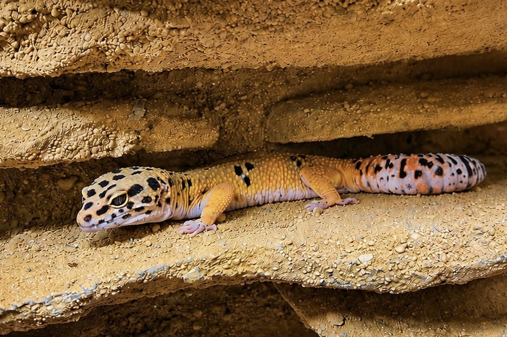
Akame
Mâle
Tangerine cross Red Stripe Bold
- Né le
- 10 juin 2025
- Père
- Vercingetorix Celtoi, Tangerine
- Mère
- Kaguya, Red Stripe Bold
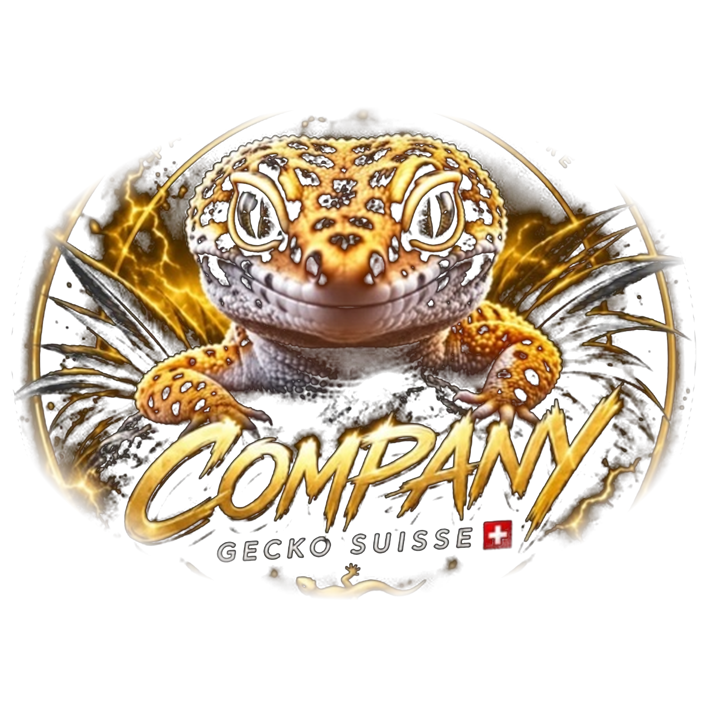
Bulle · Canton de Fribourg
Des geckos léopards nés et élevés à Bulle, en Gruyère. Chaque jeune part avec son pedigree sur trois générations, sa fiche de maintenance, et un éleveur qui reste joignable longtemps après l'adoption.
Notre
Company Gecko Suisse est un élevage familial installé à Bulle. Les pontes sont suivies au jour le jour, incubées à 30 °C, et les jeunes grandissent à la maison jusqu'à ce qu'ils mangent seuls et aient le poids pour partir.
Aucun animal ne quitte l'élevage sans ses documents. Je préfère expliquer longuement avant une adoption plutôt que de vendre vite : la plupart des difficultés rencontrées par les débutants viennent de l'installation, et elles se règlent en amont.
Certificat nominatif remontant sur trois générations, avec le morph et la date de naissance de chaque ancêtre connu.
Deux pages sur le terrarium, les températures, le substrat, l'alimentation par âge et les signes de bonne santé.
Je reste joignable après l'adoption : une mue qui traîne, une question d'alimentation, ou le sexage quelques mois plus tard.
Nos
Trois animaux issus d'un élevage suisse, avec leur généalogie documentée. C'est de là que vient tout ce qui naît ici.

Mâle
Tangerine cross Red Stripe Bold
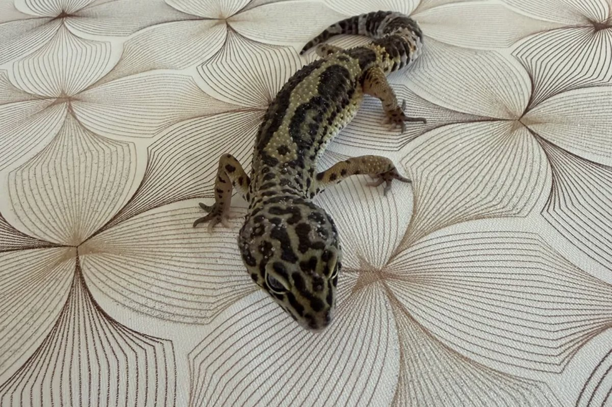
Femelle
Albey's Line Bred Snow cross Black Night
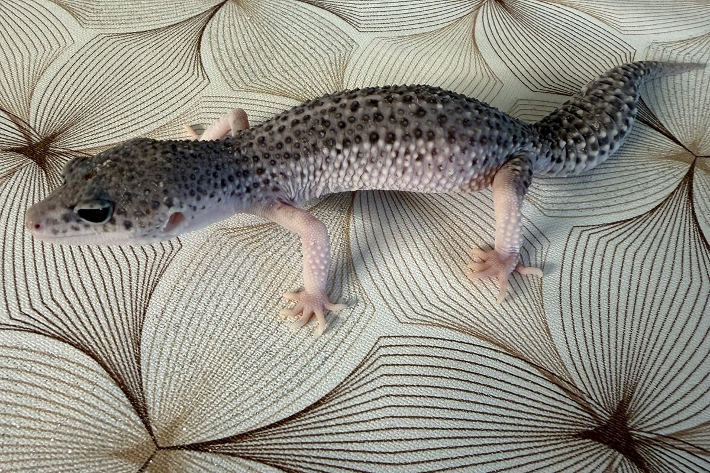
Femelle
Mack Super Snow Eclipse
Une lignée de couleur et de contraste : tons chauds du père, profondeur du Black Night et du Snow côté mère. Croisement entièrement polygénique, sans gène récessif caché, donc aucun het à déclarer.
La lignée la plus riche génétiquement. Power étant Super Snow, tous les petits sortent Mack Snow visible, et portent le gène Eclipse sans l'exprimer.
Les jeunes
Trois petits de la saison cherchent encore leur famille, tous issus d'Akame et Winry. Ils mangent seuls et ont le poids pour partir. Passez les voir sur place à Bulle : c'est toujours plus parlant que des photos.
Akame × Winry
Libre
Le plus âgé des trois, et le plus posé. Il se laisse manipuler sans broncher, ce qui en fait un bon candidat pour une première expérience.
Sa queue est plus courte que la moyenne. C'est une particularité esthétique, qui ne change rien à sa santé ni à son appétit.
100 CHF
Le réserver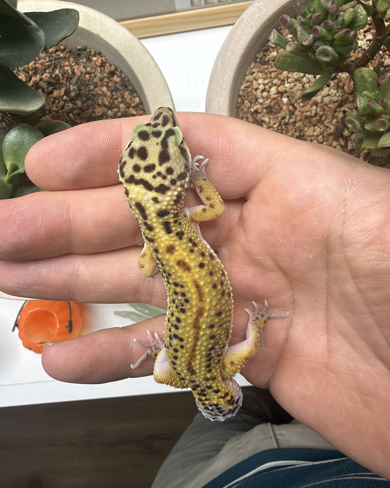
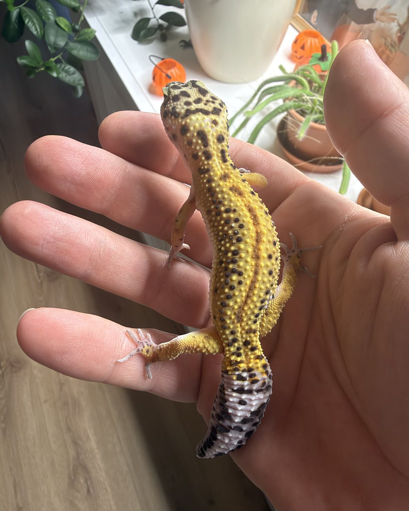
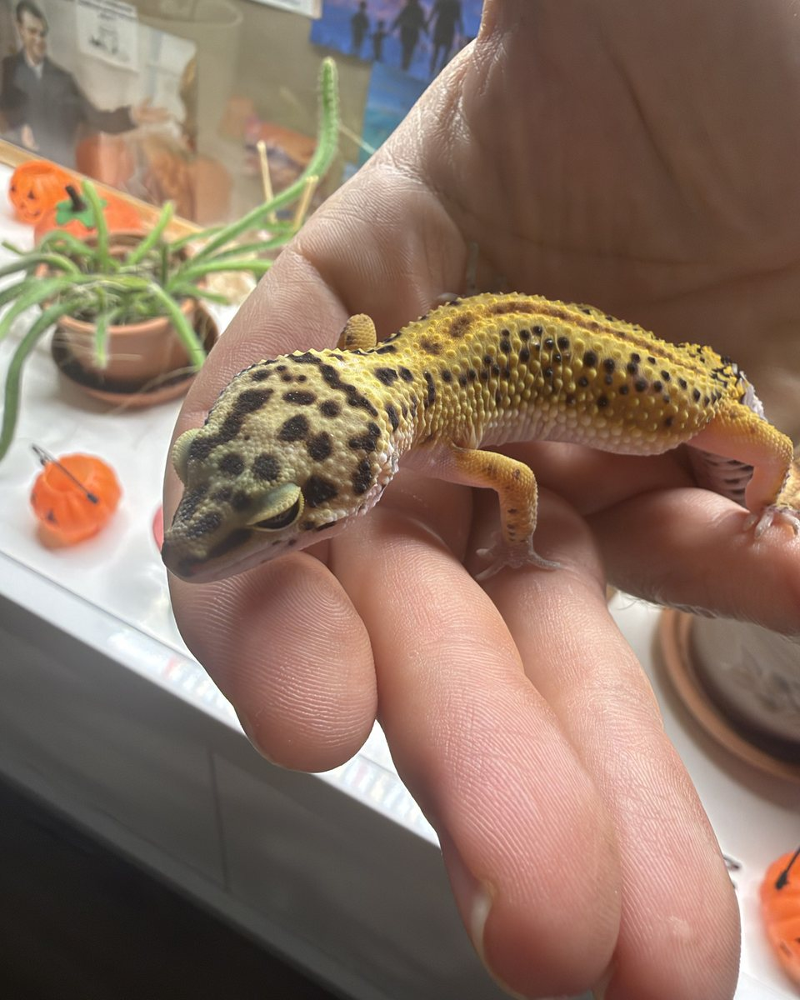
Akame × Winry
Libre
Né le jour de la fête nationale, ce qui lui vaut déjà une petite histoire à raconter.
Sa robe est nettement plus claire que celle de ses frères, avec des bandes larges et bien dessinées sur un fond lavande et jaune. L'influence Snow de sa mère se voit tout de suite.
140 CHF
Le réserver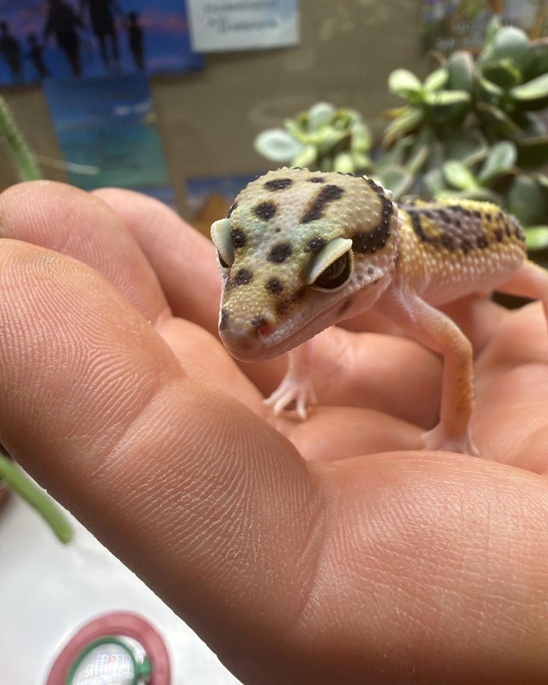
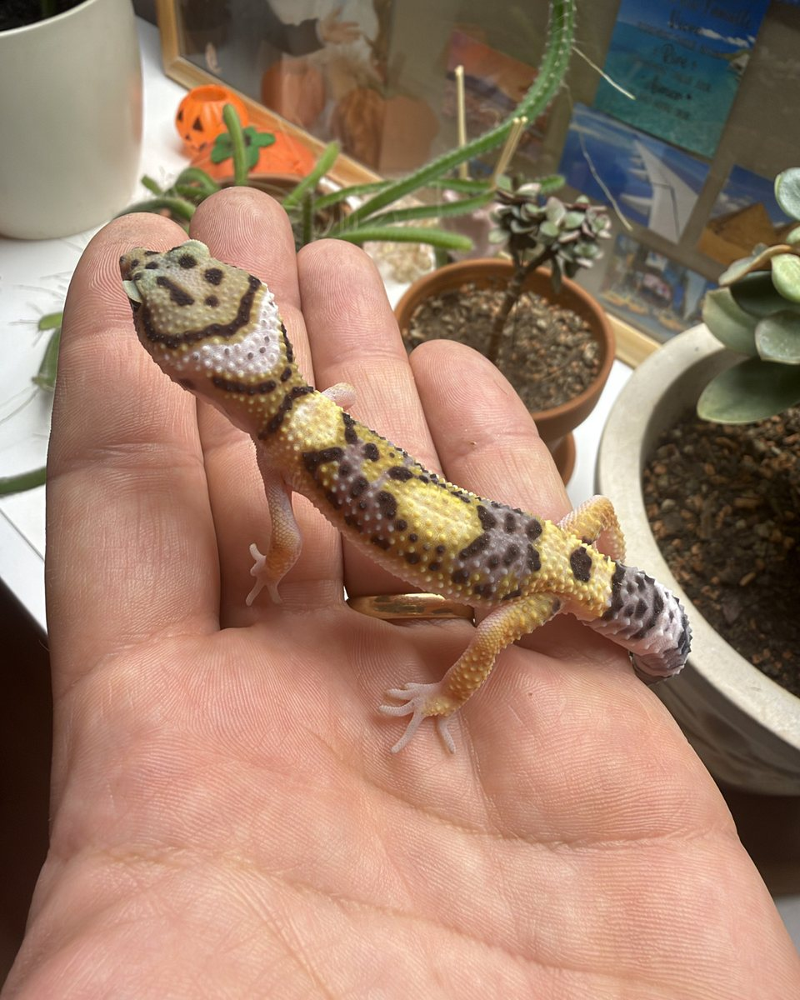
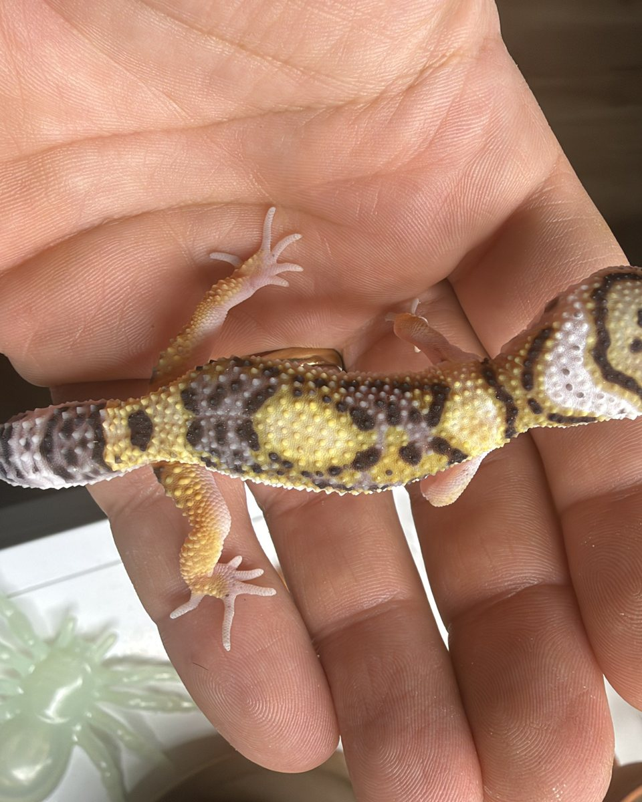
Akame × Winry
Libre
Le benjamin, et le plus vif des trois. Il bouge beaucoup et explore sans arrêt : un tempérament qui plaira à qui aime observer un animal actif le soir.
Belle queue longue et bien annelée, encore dans sa livrée de bébé.
120 CHF
Le réserver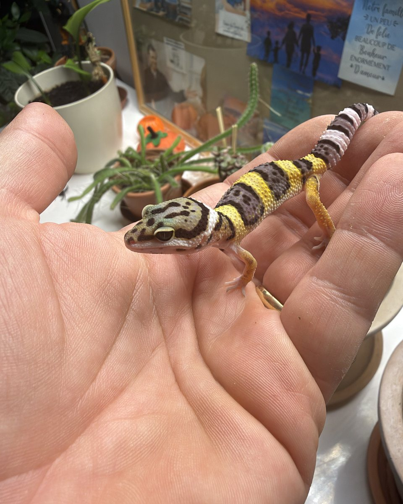
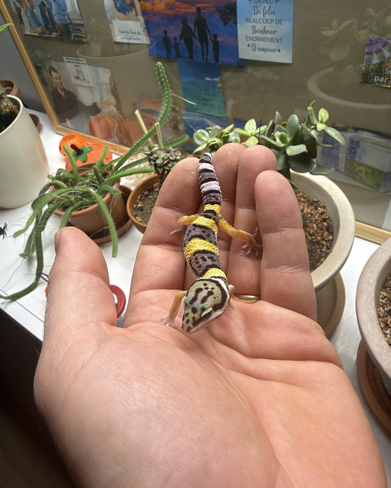
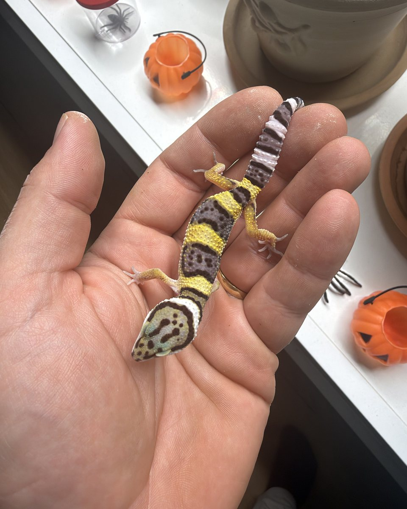
Avant d'adopter
Tout doit être en place et stabilisé avant l'arrivée de l'animal. C'est là que se joue la réussite d'une adoption : presque toutes les difficultés que l'on me rapporte viennent d'une installation incomplète ou mal réglée.
Pour un adulte, 60 × 40 cm est un minimum et 80 à 100 cm de façade est nettement plus confortable. La hauteur importe peu, le gecko léopard est terrestre : 40 cm suffisent amplement.
Pour un jeune, c'est l'inverse de ce qu'on imagine : un trop grand espace est contre-productif. Le petit peine à retrouver ses proies, son point chaud et ses cachettes, et ce stress explique une bonne partie des jeunes qui ne mangent pas. Démarrez dans un bac d'environ 30 × 20 cm, ou cloisonnez temporairement un grand terrarium pour n'en utiliser qu'un tiers. Vous ouvrirez l'espace vers cinq ou six mois.
Chez le gecko léopard, la chaleur doit venir du sol. Dans la nature, il passe ses journées caché sous des pierres chauffées par le soleil, et c'est le ventre posé sur le point chaud qui déclenche sa digestion. Une lampe qui chauffe par le haut ne fait pas ce travail.
On vise 32 à 34 °C mesurés directement à la surface du sol, du côté chaud, et 24 à 26 °C du côté frais. Posez le thermomètre sur le substrat et ne vous fiez pas qu'à l'affichage du thermostat, l'écart atteint souvent deux à trois degrés. La nuit, une baisse à 20-22 °C est naturelle.
Le thermostat n'est pas une option. Les geckos perçoivent mal la chaleur venant du ventre, et c'est précisément ainsi que surviennent les brûlures ventrales, graves et lentes à guérir. Ne comptez jamais sur l'animal pour s'écarter de lui-même.
J'utilise du désert bedding, mais jamais laissé meuble. Versez-le dans un seau, ajoutez beaucoup d'eau et mélangez jusqu'à obtenir une pâte épaisse, comme du ciment. Étalez dans le terrarium en tassant bien, puis laissez sécher plusieurs jours, parfois près d'une semaine.
Une fois sec, vous obtenez un sol dur et compact comme de la terre battue, où rien ne se détache sous le doigt. Le gecko ne peut plus en avaler en attrapant ses proies, ce qui écarte le risque d'occlusion intestinale. En attendant que le substrat soit prêt, l'essuie-tout est une solution parfaitement sûre.
Un ou
C'est la question qu'on me pose le plus souvent. Je préfère y répondre franchement, quitte à vendre un animal au lieu de deux.
Commencez avec un seul. Vous apprendrez à le connaître, vous maîtriserez votre installation, et vous verrez si la passion s'installe. Dans quelques mois, une fois son sexe confirmé, vous pourrez envisager un second animal compatible en toute connaissance de cause.
Si vous souhaitez malgré tout en prendre deux maintenant, je vous les remets volontiers, mais en vous ayant dit clairement ce que cela implique.
Son
Insectivore strict, et uniquement des insectes vivants. Une règle de taille à retenir : jamais plus larges que l'espace entre ses yeux.
| Âge | Fréquence | Quantité par repas |
|---|---|---|
| Bébé, 0 à 3 mois | Tous les jours | 2 à 4 proies |
| Juvénile, 3 à 6 mois | Tous les jours à un jour sur deux | 4 à 6 proies |
| Sub-adulte, 6 à 12 mois | Un jour sur deux | 5 à 7 proies |
| Adulte, dès 12 mois | Deux à trois fois par semaine | 6 à 8 proies |
Vos
Celles qui reviennent le plus souvent. Si la vôtre n'y est pas, écrivez-moi.
Entre quinze et vingt ans, parfois davantage. C'est un engagement sur le long terme, au même titre qu'un chien ou un chat, et c'est un point auquel je tiens avant chaque adoption.
C'est extrêmement rare, et sans gravité. Un gecko léopard bien manipulé ne cherche jamais à mordre. Au pire, un jeune peut confondre un doigt avec une proie, ce qui surprend plus que ça ne fait mal.
Oui, et c'est l'un des grands avantages de l'espèce. Laissez-le s'acclimater quelques jours après son arrivée, puis commencez par de courtes séances que vous allongerez progressivement. La plupart deviennent très dociles et viennent d'eux-mêmes dans la main. On ne l'attrape jamais par la queue, qui peut se détacher.
C'est l'un des meilleurs. Il reste petit, son installation est simple une fois bien réglée, il mange des insectes et rien d'autre, et il se manipule facilement. Le gecko à crête est son principal concurrent pour un débutant : il vit à température ambiante et accepte des préparations en poudre, mais il grimpe, il saute, et sa queue ne repousse jamais.
Pas avant quatre à six mois, de façon fiable. Je ne m'avance jamais sur le sexe d'un jeune que je remets, et je reste disponible pour vous aider à le déterminer le moment venu.
C'est fréquent et presque toujours passager. Un jeune met souvent dix jours à trois semaines à prendre ses marques dans un nouvel environnement. Vérifiez d'abord la température au sol du côté chaud : trop basse, il ne digère pas et coupe son appétit, c'est de loin la cause la plus fréquente. Proposez des vers de farine plutôt que des grillons, le soir, et laissez-le tranquille.
Le vrai indicateur, c'est sa queue : tant qu'elle reste au moins aussi large que son cou, il a ses réserves et vous avez du temps devant vous. Si elle s'affine, si les selles disparaissent ou s'il devient léthargique, consultez un vétérinaire spécialisé NAC.
Brun foncé, avec une petite partie blanche collée au bout, comme chez les oiseaux. Comptez-en tous les deux à trois jours, souvent toujours au même coin du terrarium. Une absence prolongée de selles chez un animal qui mange mérite qu'on s'y arrête.
Elle repousse. La nouvelle sera plus courte, plus trapue et moins bien dessinée, mais sans aucune conséquence sur sa santé ni sur son espérance de vie. Gardez l'installation très propre pendant la cicatrisation.
Régulièrement, et la cachette humide fait toute la différence. Vérifiez qu'il ne reste pas de peau morte sur les doigts ou le bout de la queue : accumulée, elle peut faire garrot. Si c'est le cas, un bain tiède peu profond de quelques minutes suffit généralement à la décoller.
Un adulte en bonne santé supporte sans problème quelques jours seul, avec de l'eau propre à disposition et son chauffage qui tourne. Au-delà d'une semaine, prévoyez quelqu'un pour le nourrir et changer l'eau. Un jeune, lui, demande un passage quotidien.
Jamais un juvénile : la première année, il doit grandir et constituer ses réserves. La brumation, une légère baisse hivernale, ne concerne éventuellement que des adultes bien portants à partir de dix-huit mois, et surtout en vue d'une reproduction. Elle n'est pas obligatoire.
En main propre à Bulle uniquement, jamais par envoi postal. Je fournis la boîte de transport. Prévoyez un habitacle tempéré, la boîte posée sur un siège plutôt qu'au sol, et jamais sur un siège chauffant. Nous prenons le temps de faire le tour de votre installation ensemble, et vous repartez avec le pedigree et la fiche de maintenance.
Faire une
Remplissez ce formulaire et votre demande m'arrive directement sur WhatsApp, avec tout ce dont j'ai besoin pour vous répondre précisément. Aucune donnée n'est enregistrée sur ce site.
Venir les
Je réponds aux questions avant, pendant et après l'adoption, et je préfère largement que vous passiez voir les animaux avant de vous décider. Remise en main propre à Bulle uniquement, jamais d'envoi postal.
Passion · Qualité · Bien-être